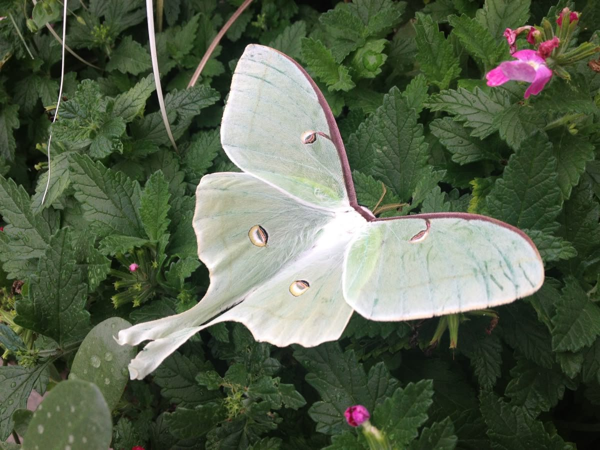
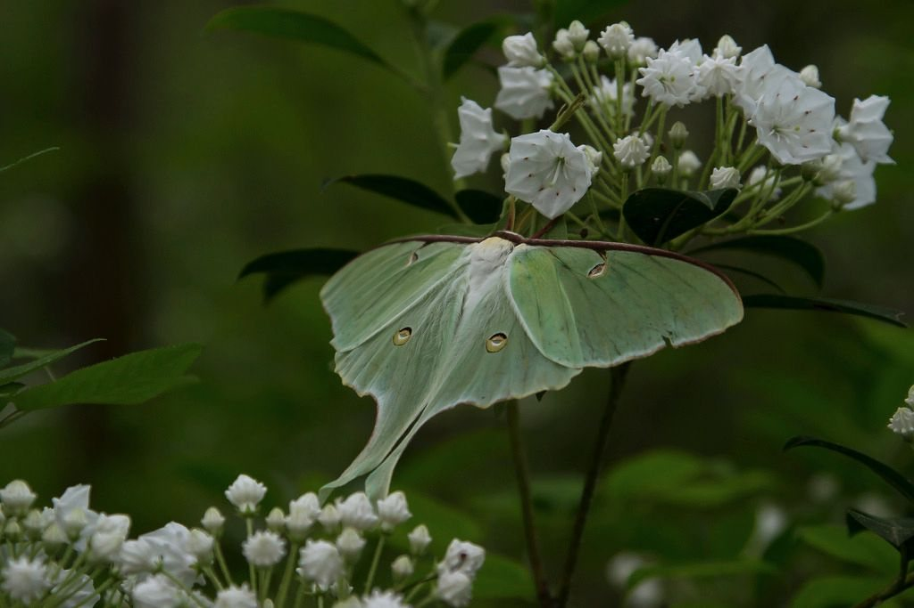
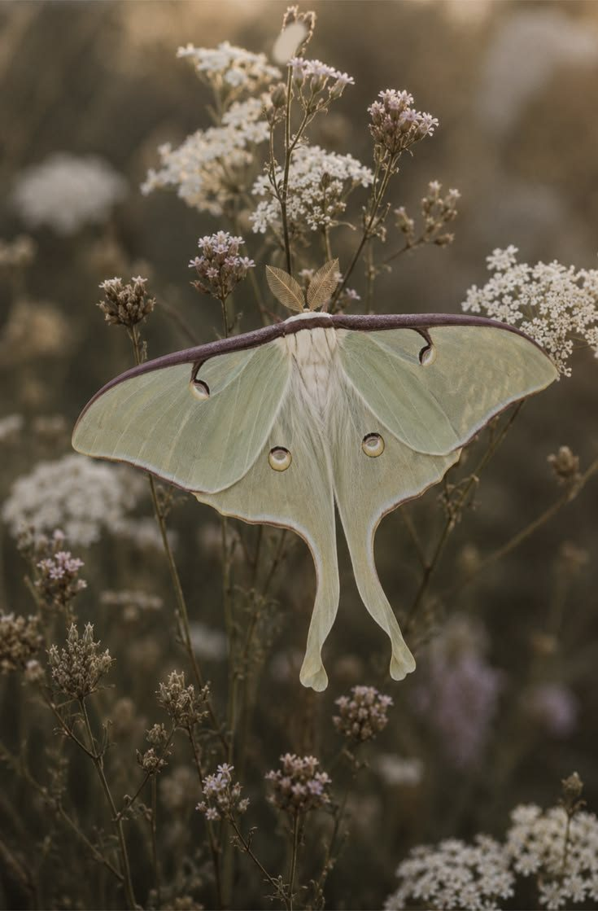
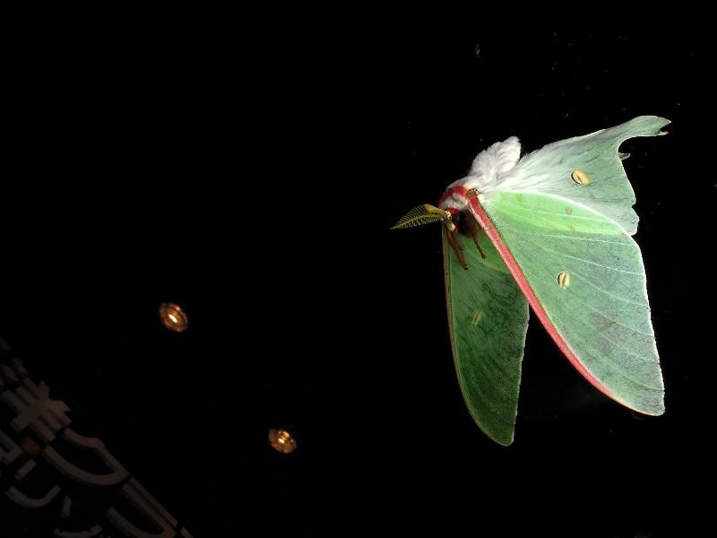
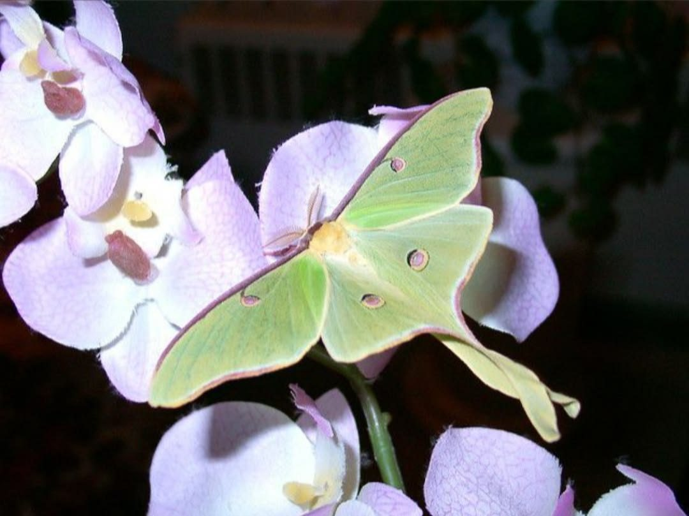

One of the most striking moths in North America, and one most people will never see. Adults live for about a week, fly only at night, and never eat.
Rarely seen

Pale lime green, about 8 to 11.5 cm across, with one eyespot on each wing.

The long tails on its back wings may help it escape bats.

The front edge of each wing is lined in a thin band of maroon to brown.

Adults only fly after dark, which is why so few people see one.

Spring moths lean more blue, and summer moths lean more yellow.
Adults have no working mouth and never eat. They live off energy stored as caterpillars.